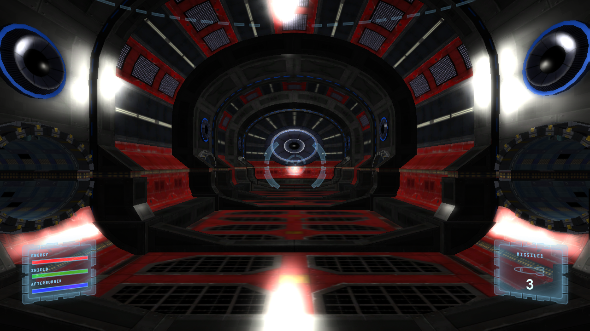

Ship Game
Ported from Microsoft's Windows/HiDef Ship Game Starter Kit for XNA 4.0.
Source for this sample on GitHub ↗

Play ▸Opens in a new tab. Click the game canvas to give it keyboard focus.
About this sample
Choose a ship and one of two arenas, then fly, fire and survive. The complete starter kit includes animated menus, a controls screen, single and two-player selection, normal-mapped levels, particles, post-processing and XACT audio.
Controls
| Action | Control |
|---|---|
| Menus and ship or level choice | Arrow keys; Enter to select; Escape to go back |
| Fly and aim | W/S forward and back, Q/E strafe, arrow keys rotate, A/D bank |
| Fire | Space for laser; Enter for missile |
| End the round | Escape; return to the title with Enter |